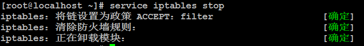

三、LAMP安装
1、准备工作
1.1、关闭防火墙
原因是后期我们需要使用80端口，所以可以先关闭防火墙。
在centos7之前，系统默认使用的防火墙软件叫做iptables。在linux中启动/关闭/重启一个服务的时候所使用的命令如下：
#service 服务名 start/stop/restart

虽然目前是停止了，但是由于其有开机启动的功能，所以可以直接进行卸载。
可以使用rpm进行卸载。
查询：

我们需要卸载的是上面那个。
删除：
在删除的时候需要有依赖关系，可以加上--nodeps解决依赖关系问题。
1.2、linux中的解压命令
在linux中常见的压缩包有2个格式，一个是gz格式，另外一个是bz2格式，两个格式的压缩包解压命令有所不同：
命令1：gz格式文件 #tar -zxvf 压缩包路径
命令2：bz2格式文件 #tar -jxvf 压缩包路径
2、安装zlib压缩库
| shell>#cd /root/data shell>#tar -zxvf zlib-1.2.5.tar.gz shell>#cd zlib-1.2.5 shell>#./configure //对当前的程序安装进行配置 shell>#make && make install //编译&&安装 |
Configure的结果：

Make&&make install的结果：

3、安装apache
在安装Apache之前我们需要先卸载系统中默认安装的Apache，为了防止后期80端口被占用，我们可以先卸载掉之前安装的Apache：

Httpd存在依赖关系，所以需要加上--nodeps。
| shell>#cd /root/data shell>#tar -jxvf httpd-2.2.19.tar.bz2 shell>#cd httpd-2.2.19 shell>#./configure --prefix=/usr/local/http2 --enable-modules=all --enable-mods-shared=all --sysconfdir=/etc/httpd --enable-so shell>#make && make install |
--prefix：指定软件的安装位置
--enable-modules：允许安装的模块
--sysconfdir：指定Apache配置文件的存放目录
复制上述的配置命令到putty中执行，复制的时候不要少复制，也不要多复制。
Configure的结果：

Make&&make install的结果：

修改Apache配置文件（148行左右），去掉ServerName前的#注释：
shell>#vim +148 /etc/httpd/httpd.conf |

Apache启动/停止/重启命令：
shell>#/usr/local/http2/bin/apachectl start/stop/restart |
测试访问，可以在windows主机的浏览器中输入linux服务器的ip地址来访问：

4、安装libxml2
| shell>#cd /root/data shell>#tar -zxvf libxml2-2.7.2.tar.gz shell>#cd libxml2-2.7.2 shell>#./configure --prefix=/usr/local/libxml2 --without-zlib shell>#make && make install |
--without-zlib：不需要使用zlib扩展
Configure的结果：

Make && make install的结果：

5、安装jpeg8
| shell>#cd /root/data shell>#tar -zxvf jpegsrc.v8b.tar.gz shell>#cd jpeg-8b shell>#./configure --prefix=/usr/local/jpeg --enable-shared --enable-static shell>#make && make install |
Configure的结果：

Make && make install的结果：

6、安装libpng
| shell>#cd /root/data shell>#tar -zxvf libpng-1.4.3.tar.gz shell>#cd libpng-1.4.3 shell>#./configure shell>#make && make install |
Configure的结果：

Make && make install的结果：

7、安装freetype（字体库软件）
| shell>#cd /root/data shell>#tar -zxvf freetype-2.4.1.tar.gz shell>#cd freetype-2.4.1 shell>#./configure --prefix=/usr/local/freetype shell>#make && make install |
Configure的结果：

Make && make install的结果：
在这个过程中可能会出现错误，但是如果被忽略，则没有问题


8、安装GD库（处理图片的扩展）
| shell>#cd /root/data shell>#tar -zxvf gd-2.0.35.tar.gz shell>#cd gd-2.0.35 shell>#./configure --prefix=/usr/local/gd --with-jpeg=/usr/local/jpeg/ --with-png --with-zlib --with-freetype=/usr/local/freetype shell>#make && make install |
--with-jpeg：需要使用jpeg扩展，后面是其安装的位置
--with-png：需要使用png扩展，后面是其安装的位置
--with-freetype：需要使用freetype扩展，后面是其安装的位置
Configure的结果：

Make && make install的结果：

9、安装php
| shell>#cd /root/data shell>#tar -jxvf php-5.3.6.tar.bz2 shell>#cd php-5.3.6 shell>#./configure --prefix=/usr/local/php --with-apxs2=/usr/local/http2/bin/apxs --with-mysql=mysqlnd --with-pdo-mysql=mysqlnd --with-mysqli=mysqlnd --with-freetype-dir=/usr/local/freetype --with-gd=/usr/local/gd --with-zlib --with-libxml-dir=/usr/local/libxml2 --with-jpeg-dir=/usr/local/jpeg --with-png-dir --enable-mbstring=all --enable-mbregex --enable-shared shell>#make && make install |
--with-apxs2：指定apxs2目录位置，这个配置项用于连接php和Apache的。
--with-mysql：让php支持mysql扩展
--with-pdo-mysql：让php支持pdo_mysql
--with-mysqli：让php支持mysqli扩展
Configure的结果：

Make && make install的结果：

| 复制php配置文件到指定目录： shell>#cp php.ini-development /usr/local/php/lib/php.ini |
修改apache配置文件：
| 添加apache的mime类型（355行左右）： shell>#vim +355 /etc/httpd/httpd.conf 在mime类型模块中添加： AddType application/x-httpd-php .php //让Apache支持解析php文件  在dir_modul模块添加默认文档声明（218行左右）： DirectoryIndex index.php index.html  |
| 重启apache： shell>#/usr/local/http2/bin/apachectl restart |
有的时候可能重启一次不生效，建议此处可以重启2次。
往站点目录中创建一个php文件，测试Apache的支持情况。
Apache的站点目录位于：/usr/local/http2/htdocs
在htdocs目录下创建china.php文件，其中代码如下：

测试访问china.php文件：

10、安装cmake
Cmake是一款c语言的编译器，mysql从5.5版本之后需要使用cmake进行编译。
| shell>#cd /root/data shell>#tar -zxvf cmake-3.6.0-rc1.tar.gz shell>#cd ./ cmake-3.6.0-rc1 shell>#./bootstrap //此处使用的是bootstrap，不是configure shell>#gmake shell>#gmake install |
Bootstrap的结果：

Gmake的结果：

Gmake install的结果：

11、安装ncurses-devel
该软件需要从光盘中进行安装（使用rpm安装）：

安装软件：
#rpm -ivh ncurses-devel-5.7-3.20090208.el6.i686.rpm

12、安装mysql
| shell>#cd /root/data shell>#tar -zxvf mysql-5.5.17.tar.gz shell>#cd mysql-5.5.17 shell>#cmake \ -DCMAKE_INSTALL_PREFIX=/usr/local/mysql \ -DMYSQL_DATADIR=/usr/local/mysql/data \ -DDEFAULT_CHARSET=utf8 \ -DDEFAULT_COLLATION=utf8_general_ci shell>#make && make install |
-DCMAKE_INSTALL_PREFIX：mysql的安装目录
-DMYSQL_DATADIR：mysql的data目录
-DDEFAULT_CHARSET：mysql默认的字符集
-DDEFAULT_COLLATION：默认的排序规则
Cmake的结果：

Make && make install的结果：

| 产生mysql配置文件（下述命令必须在mysql的解压目录中执行）： shell>#cp support-files/my-medium.cnf /etc/my.cnf 如果提示是否覆盖，输入y，然后按下回车 |
| Mysql用户组及权限设置： shell>#useradd mysql shell>#chmod u+x,g+x,o+x /usr/local/mysql shell>#chown -R mysql.mysql /usr/local/mysql （设置所有者） |

| 在linux下装好mysql之后本身没有一些默认的数据，如test数据库。所以需要进行数据库的初始化操作。 数据库初始化： shell>#/usr/local/mysql/scripts/mysql_install_db \ --user=mysql \ --basedir=/usr/local/mysql \ --datadir=/usr/local/mysql/data & &符号，表示所在的命令后台执行。 卡屏时，按下回车。  |
在此步骤中需要看到2个OK：

| 把mysql安装文件(除data)的所有者都改为root，避免数据库恢复为出厂设置： shell>#chown -R root /usr/local/mysql #将mysql安装目录递归全部改成root所有 shell>#chown -R mysql /usr/local/mysql/data #除了mysql/dta目录之外 |
| 后台开启运行mysql服务，命令完成按下回车： shell>#/usr/local/mysql/bin/mysqld_safe --user=mysql & 卡屏的时候按下回车 |

| 查看mysql是否启动： shell>#ps -a | grep mysql -a：all grep表示过滤 |
在ps的结果中如果看到以下的2个进程则表示mysql启动成功：

| 测试数据库： shell>#/usr/local/mysql/bin/mysql -u root |

安装完成mysql，默认是没有密码的，如果需要设置密码，则可以在mysql的命令行中按照以下的步骤进行设置：
| 设置数据库密码： mysql>use mysql; mysql>UPDATE user SET Password=password('123456') WHERE user='root'; mysql>flush privileges; //刷新权限信息 |

开启允许远程连接：
更新下user表中的host字段，更新成%（表示允许在任何地方连接）：
update user set host= '%' where user ='root' limit 1;
flush privileges;

使用navicat进行远程连接：连接成功。